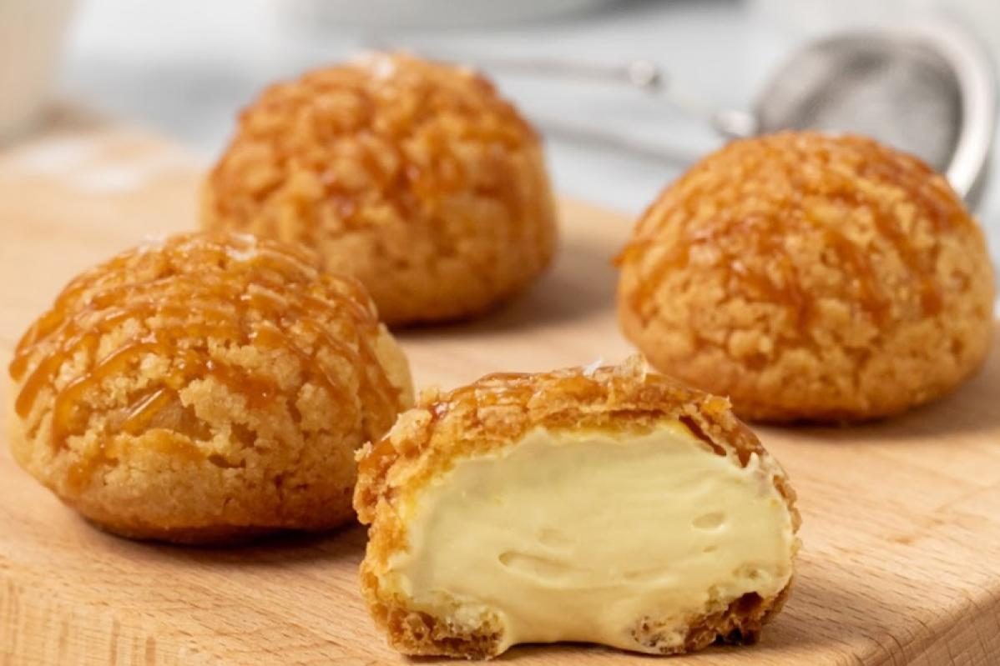
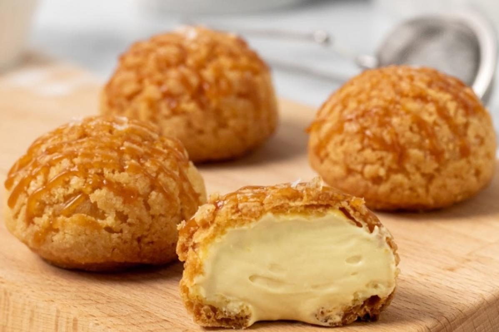
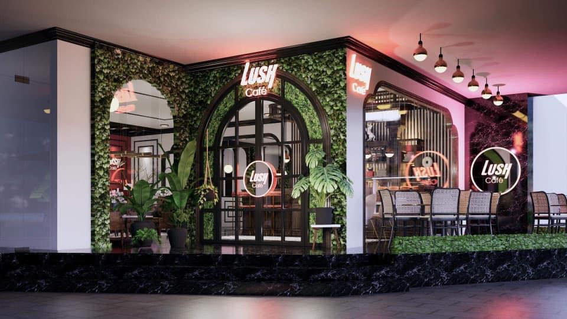
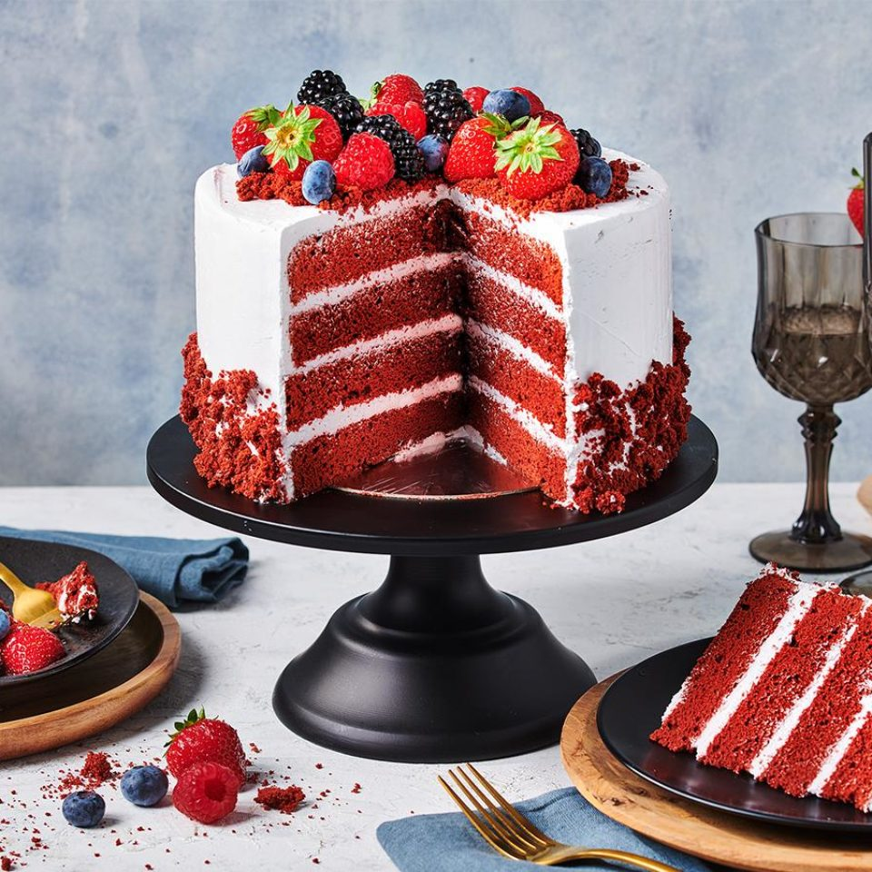
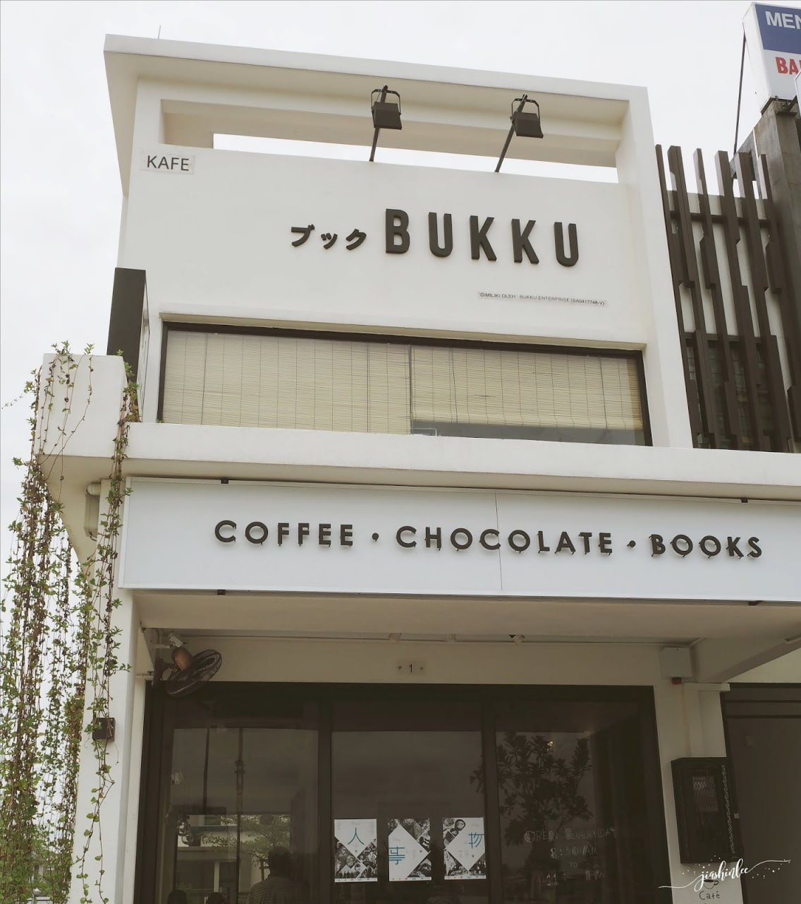
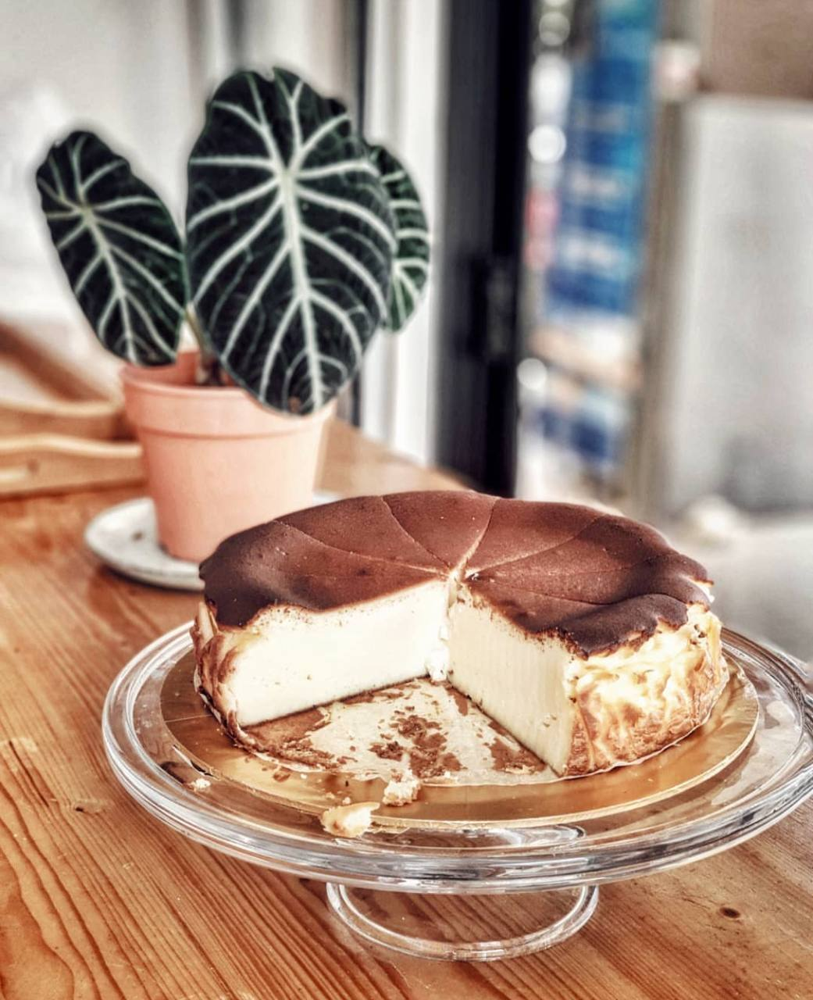
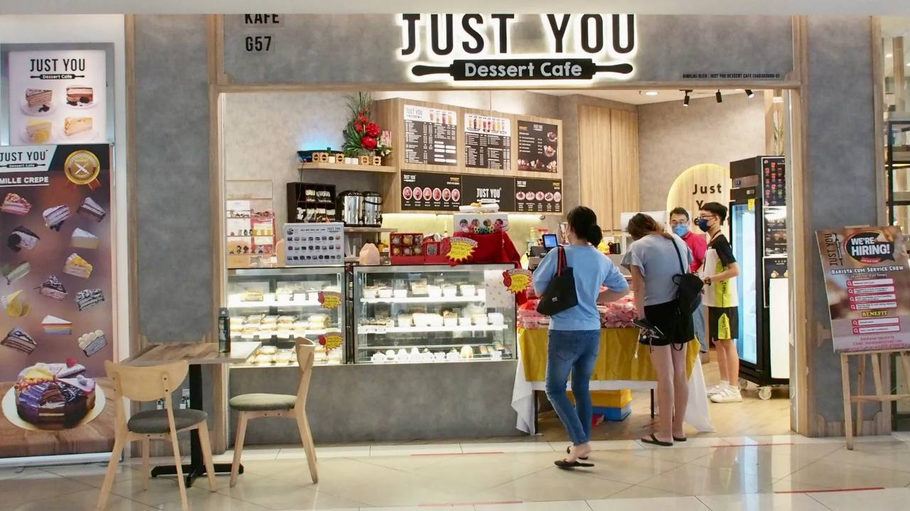
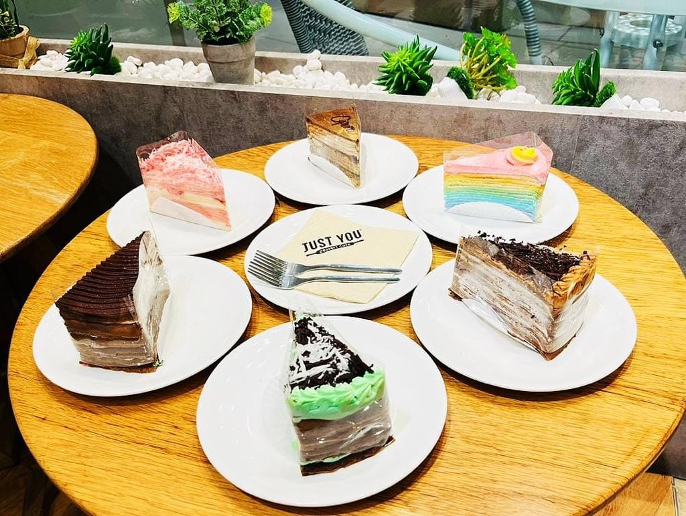

Must-Try Spots Before You Cook It Yourself!
Thinking of recreating your favorite dish at home? Before you do, why not experience the original flavor first? We highly recommend checking out these handpicked cafes, restaurants, and hidden gems known for serving the best versions of the dishes you love.
These places aren’t just about good food — they offer inspiration, authentic taste, and ideas to help you perfect your own version at home.
 

📍 The Ordinary Baker & Cafe
No 51-GF, Jln Setia Perdana BC U13/BC, Setia Alam, 40170 Shah Alam, Selangor


📍The Lush Café
Sunsuria Forum, Setia Alam.


📍 The Bukku Café
No.1, Jalan Singgahsana 4A/KU2, Bandar Bukit Raja, 41050 Klang, Selangor


📍 Just You Café
4F55 WH, Setia City Mall, Alam Nusantara, 40170 Shah Alam, Selangor